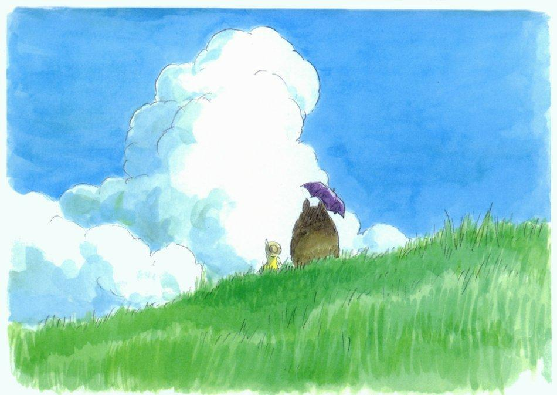

我妈一直都信耶证，而且每周都会有教会讲课。他们坚信世界会迎来大末日，只有上帝能拯救他们这些信徒。因为这个世界已经坏透了！
今天我妈下班回家，被人打了一拳，人直接从自行车上摔了下来。幸运的是冬天裹得严实，没有什么大事，只是衣服破了和轻微擦伤。
我妈跟我说这件事情的时候，她说“现在的人都坏透了。我又不认识他，他坐在电动车上不动，我从他身边绕过去，他一伸手把我打倒了。等我起来大骂他，臭流氓，他已经骑电动车跑了。路上就有有一个远处的米色长羽绒服的行人，她看了看我也走了。按理说，怎么样都应该过来看看我，人心冷漠。”
我听了她的这些话之后，鼓励她陪她去报警。时间地点人物事，说清楚。就算看不清人，凭借时间和地点以及周围没人，也能通过监控了解此人去向。
但是她还是给了好姐妹，以及我爸，抱怨了此事。还说，是不是我爸在牌桌上遇到的相好，来报复她的。
她的心情我能理解，被人打了心里都难受。而且衣服、车框都破破了，实在是心意难平。
在我看来，这件事其实很简单。
1. 有可能是肇事者和朋友闹着玩等朋友，在马路上停下来等朋友。当我妈路过时，把她当成了他朋友。开玩笑，推了一下，男人和女人的承受力还是不一样的。因为害怕担责跑了。
2. 有可能人家路过打了个哈欠，伸手打了她。
3. 据我妈猜测的打击报复，或是故意伤害。我觉得还是不太可能的。一没仇人，二没好处。无差别攻击不太可能。
关于路人的冷眼旁观，我觉得多一事不如少一事，所以走了。其实，现在的社会就是这样。有问题交给警察，当代的年轻人，很少会去围观。在一件事突发的情况下，不清楚情况下，还是自保为主。我妈认为的那个电视剧的时代已经一去不复返了，跟不上时代的步伐也是每个人多少会面对的。
在我爸回家之前，她一直不愿意去报警，觉得报警也没有用。最后还是做我爸车去了派出所。
没想到耶证已经影响她那么深了，每一句都是对整个社会的抱怨。我和她说，你不去报警也是对恶人的默许和纵容，何必说社会的险恶。我知道她比较信上帝说的善，所以这么说的她。我相信世界残酷但也美丽。
在我很小的时候，我妈就信基督教了。03年的时候，就已经入了“耶和华见证人”了。家里有很多送的书，本来想阻止她继续学习的。和一些反邪教的人沟通过，也是没什么好的办法。
一颗向善的心，却因为常识以及知识的欠缺，而走向了另外一条道路。愿那些善良的人能被温柔以待吧。
